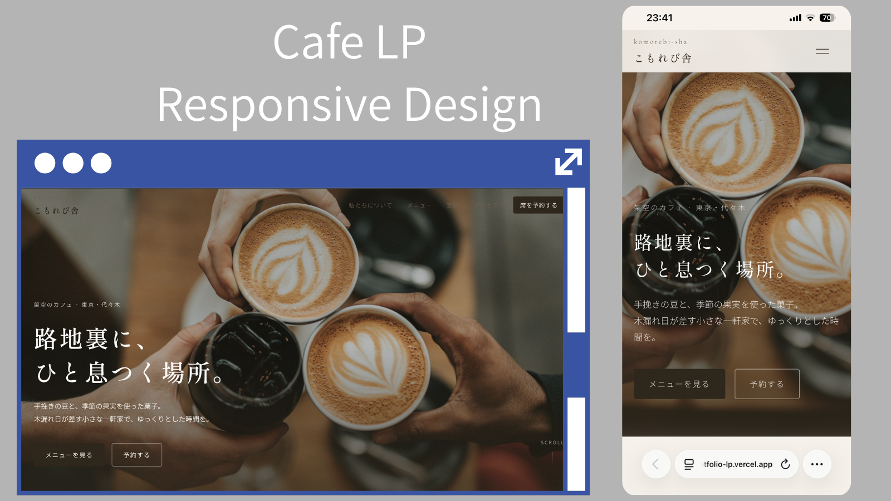

市川龍世
はじめまして、りゅうせいです。
現在はトラックドライバーとして働きながら、Webコーダーへの転職を目指して学習を続けています。
HTML,CSS,JavaScriptを中心に学習しており、レスポンシブ対応や
アニメーション実装を取り入れたWebサイト制作に取り組んでいます。
このポートフォリオでは、学習過程で制作したサイトや成果物を紹介していきます。
今後も継続して制作と学習を重ね、より使いやすく魅力的なWebサイトを作れるよう
取り組んでいきます。
GitHub制作実績
これまでに制作したサイトの一部をご紹介します。